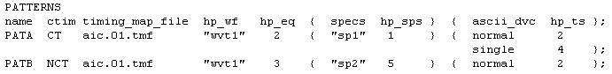

Controlling Set Numbers and Wavetable Names
By default, ait selects the equation set, specset, and timing set numbers, and also creates the wavetable names. It writes these numbers and names into the output columns of the output version of the global configuration file. By default, the output columns only serve to inform the user of the numbers that ait has selected. But you can activate them as input columns with the m option of the ait parameter -M. In this way you can control the numbers and names to be used.
A general restriction is that you cannot control the set numbers for a single-port setup and a multi-port setup with the same global configuration file.
Example
The following example shows how the output configuration file of The Output Columns could be modified for controlling the set numbers and wavetable names with the -Mm option of ait.
